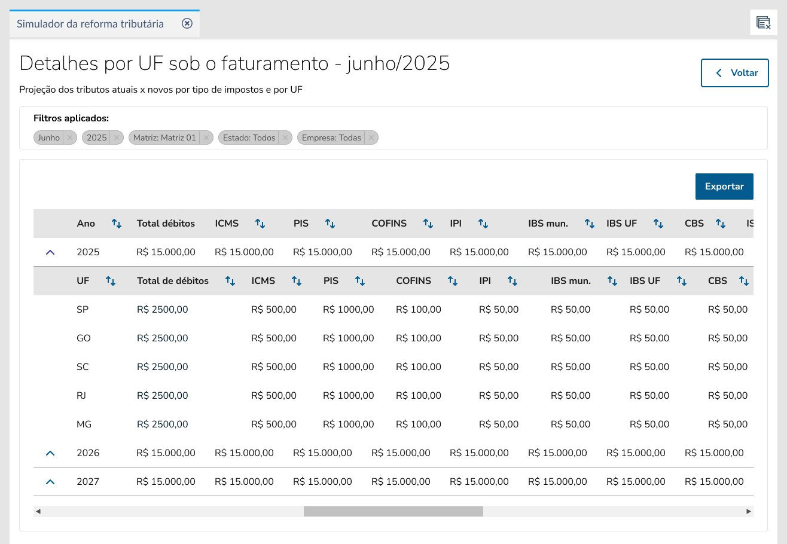

Oi, sou Stefânia.
Conecto design a objetivos de negócio — do discovery à entrega — com foco em engajamento, adoção e impacto real. Trabalho em produtos complexos com múltiplos perfis de usuário, em parceria com times de produto, engenharia e negócio.
Cases
Monitor Tributário
TOTVS · Produto novo · ERP Fiscal · 2024
Times fiscais gerenciavam planejamento tributário com planilhas e consultorias externas — processo caro, fragmentado e sem escalabilidade. Conduzi pesquisa com 21 clientes, estruturei priorização via matriz de relevância e liderei os testes — entregando um produto que se consolidou como receita recorrente estratégica no portfólio ERP.
Impacto além do produto
A pesquisa gerou outro case e despriorizou uma iniciativa de consultoria — evitando investimento na direção errada.
Etapas do projeto

"Produto consolidado como receita recorrente estratégica no portfólio ERP — com churn baixo e backlog de evolução contínua."
Resultados pós-lançamento · TOTVSConciliação de Módulos
TOTVS · Produto novo · ERP Contábil
Divergências entre estoques contábil, fiscal e gerencial eram um problema crônico no ERP — sem causa raiz, sem autonomia do cliente e com alto custo de suporte. Defini a metodologia de discovery em duas camadas — interna e com clientes — e liderei a concepção de um produto que transformou um processo opaco em análise guiada com ação direta.
Validação interna
100% dos times de suporte e serviço confirmaram que o nível de item é essencial para análise eficiente.
Etapas do projeto

"Parabéns pela iniciativa — é nosso calcanhar de Aquiles. Ter a comparação por CGO é uma vitória."
Edvaldo · Suporte Prime · TOTVSMinha Gestão de Lojas
TOTVS · Produto Mobile · Varejo Supermercadista
O app existia mas era um sistema de registro — não de ação. Gestores identificavam ocorrências mas as correções dependiam de outros canais. O discovery revelou 3 perfis de uso não mapeados no MVP, redefinindo a arquitetura da solução e transformando o app em ferramenta de decisão integrada ao ERP.
Impacto em cliente real
78% de redução de perdas por validade e 21% de aumento de vendas — resultado público após adoção.
Etapas do projeto

Premiado na convenção interna da TOTVS como o produto com maior geração de receita recorrente em 2024.
Destaque interno · Convenção TOTVS 2024Simulador da Reforma Tributária
TOTVS · Feature estratégica · ERP Fiscal
Times fiscais enfrentavam a reforma tributária sem visibilidade sobre seu impacto no caixa — a projeção era montada manualmente em planilhas. Conduzi o discovery e a entrega de uma funcionalidade que antecipou esse cenário, transformando o processo em análise navegável e influenciando diretamente decisões de roadmap.
Decisão estratégica
Feature desprioritizada com base nos dados do discovery — evitando desperdício de desenvolvimento.
Etapas do projeto

"Isso vai ajudar muito em apresentações executivas — antes tínhamos que montar essas visões manualmente."
Gerente fiscal · Rede de supermercadosPergunte sobre o portfólio
Quer saber se Stefânia tem experiência com alguma habilidade, metodologia ou tipo de projeto específico? Pergunte diretamente.